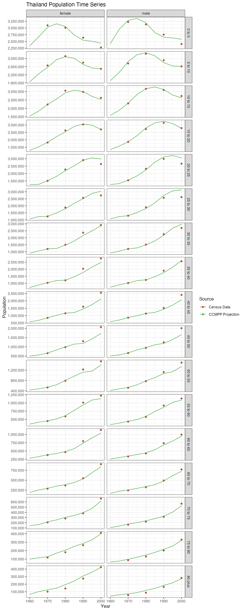

The demViz package provides simple ggplot2 wrapper functions for common graphs used in demography, public health and the social sciences.
One of the most common plots made when comparing estimates or data for different groupings (by location, sex, age, race, income etc.) is a line graph.
To demonstrate demViz::plot_line_graph we’ll use population projections and population data from the demCore package. This is what the plot input data looks like after some basic prep.
thailand_population #> year sex age_start age_end age_name value source_name #> 1: 1960 female 0 5 0 to 5 2338000 CCMPP Projection #> 2: 1960 female 5 10 5 to 10 1857000 CCMPP Projection #> 3: 1960 female 10 15 10 to 15 1543000 CCMPP Projection #> 4: 1960 female 15 20 15 to 20 1287000 CCMPP Projection #> 5: 1960 female 20 25 20 to 25 1250000 CCMPP Projection #> --- #> 438: 2000 male 60 65 60 to 65 996000 Census Data #> 439: 2000 male 65 70 65 to 70 770000 Census Data #> 440: 2000 male 70 75 70 to 75 567000 Census Data #> 441: 2000 male 75 80 75 to 80 330000 Census Data #> 442: 2000 male 80 Inf 80 plus 282000 Census Data #> source_type point #> 1: Estimate FALSE #> 2: Estimate FALSE #> 3: Estimate FALSE #> 4: Estimate FALSE #> 5: Estimate FALSE #> --- #> 438: Data TRUE #> 439: Data TRUE #> 440: Data TRUE #> 441: Data TRUE #> 442: Data TRUE
plot_line_graph requires that we specify what column in the input data corresponds to the x-value (x_col) and the y-value (y_col). The point_col argument specifies the data we want to plot as points rather than a line.
The scale_manual argument is a flexible argument that allows the user to specify manual values for different aesthetics like colour or linetype etc. Each aesthetic must have col, legend_title and scale attributes.
plot_line_graph( dt = thailand_population, plot_title = "Thailand Population Time Series", x_col = "year", x_axis_title = "Year", y_col = "value", y_axis_title = "Population", y_axis_commas = TRUE, point_col = "point", scale_manual = list( colour = list( col = "source_name", legend_title = "Source", scale = c("Census Data" = "#A55B3B", "CCMPP Projection" = "#4DAF4A") ) ) )
